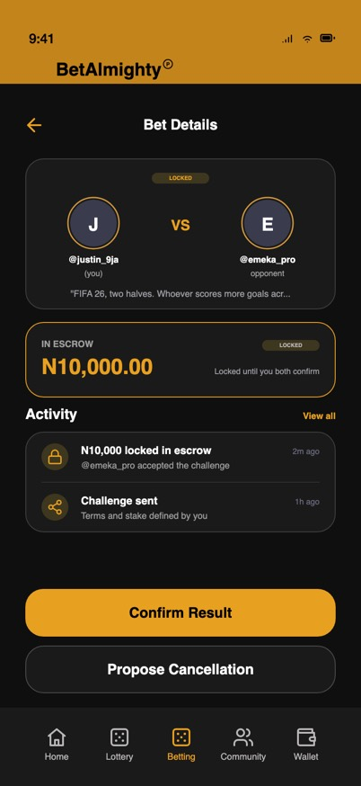
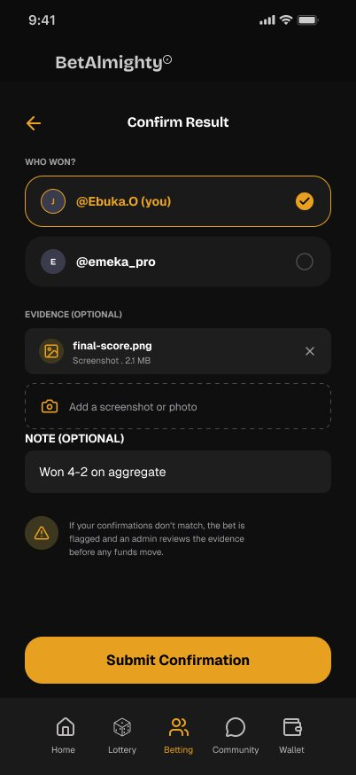
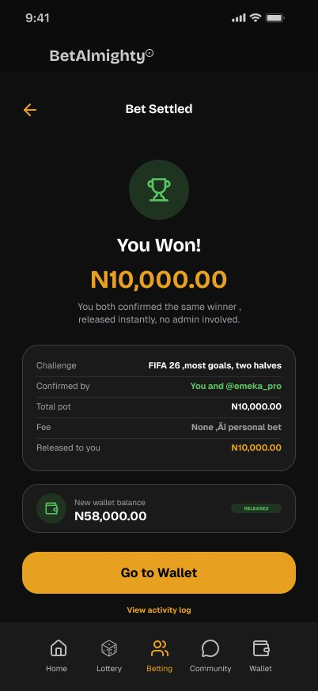
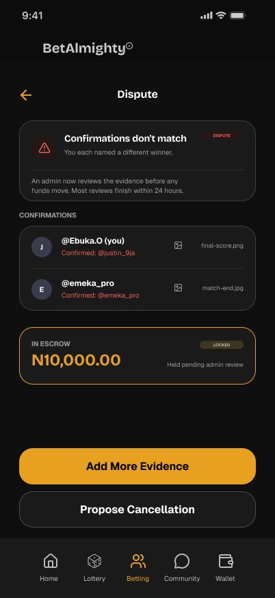
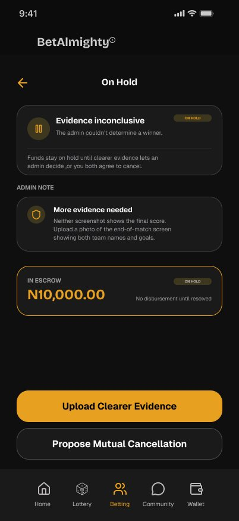

BA-01 · Fintech · iOS · Client project
BetAlmighty®
Holding friends' money fairly. A Nigerian betting app where friends stake against each other and the money waits in escrow until both sides agree on the result.


A requirements doc with user stories for seven modules, from the wallet to 1v1 bets.
AI-drafted mid-fi flows from every user story, critique rounds, then the final screens redesigned in Figma.
135 screens and a handoff note with every open rule and risk. In development, and praised by the client for simplicity.
What I owned
- The iOS app end to end: 135 screens across home, lottery, betting, community and wallet
- The 10-state escrow system, mapped with engineering before any screens
- A failure state for every money flow: declined cards, BVN mismatches, disputes
- The responsible-gambling tools, built into the core flows
- The dark-first token system for colour, type and spacing
A requirements doc, not a design brief
The client arrived with numbered modules, functional requirements and user stories, from the dashboard to the 1v1 personal bet. It said what the product must do. It didn't say how it should feel, or what happens when money goes wrong. That gap was the job.
Holding friends' money
When two people bet against each other, someone has to hold the stakes and someone has to decide who won. Both had to feel fair.
Nigerian payment realities
Bank transfer is the default, card charges get declined, and many players hold USDT. Funding and withdrawals had to work on all three.
Gambling harm
Making betting social also makes it easier to overdo. Limits and breaks had to sit inside the core flows, not in a settings page.
From user stories to final screens
I was the only designer on this project. For each module, I gave Claude the client's user stories and had it draft the flow as mid-fidelity screens. I then reviewed every flow, redesigned the final screens myself in Figma, and wrote the handoff notes.
- User stories in
For each module I gave Claude the client's requirements and user stories and had it draft the whole flow as mid-fidelity screens, with the user-story number on every frame.
- Flow boards out
Each flow came back as a labelled board, every state side by side, ready to paste into Figma and review end to end.
- Critique rounds
I used AI as a critic too: where flows dead-end, which states are missing, where the UI promises something the product can't deliver. I acted on what held up and set aside a critique that misread the product.
- Redesign in Figma
I redesigned the final screens myself in Figma and built the visual language and token system around them.
- Handoff notes
I wrote up every rule the designs assumed and every question the client had to answer before build.


July draftFinalSame screen, two stages. Drag to compare. The structure survived; the redesign quietened the chrome so the money in escrow is the loudest thing on screen.
Four calls the brief didn't make
Each one started as a gap or a problem I found in the drafts.
Make it obvious who settles a bet
Problem: P2P market, group and 1v1 bets shared the same card, the same "escrow" wording and the same title. But one settles itself, and one needs you to chase a friend.
Decision: every bet type carries its own identity from creation to the wallet. Blue settles automatically. Gold means you and your opponent confirm. Committed Funds puts the bets that need you at the top.
- Blue badge: the bet settles itself from the event result.
- Gold badge: you and your opponent confirm the winner.
- One question at the top: who decides the result?
Let people in light, but gate the money
Problem: the first sign-up draft offered Skip on registration and on the phone code, which means skipping identity checks in an app that holds money.
Decision: no skipping the phone code, and an honest four-step progress bar. BVN can wait, but until it's verified withdrawals stay locked, and the success screen says exactly what's available and what isn't.
- What's locked is said up front: withdrawals wait for BVN.
- A Tier 1 badge follows the player until they verify.
- Verifying stays one tap away.
Deposits earn revenue. Withdrawals earn trust.
Problem: early drafts ended money flows at a button. Nothing told players what happened after their money left their hands.
Decision: I rebuilt withdrawal as review with fees upfront, a one-time code, a detailed receipt and a status tracker, with network guardrails and an irreversibility check for crypto. Then I gave funding the same pending-to-confirmed structure.
- Every step from request to credit, with times.
- Honest timing at the step that's in progress.
- Help is in the flow, not in a menu.
Nothing refunds until both agree
Problem: reviewing the 1v1 flow, I found there was no way to back out of a bet once the stakes were locked.
Decision: a two-sided handshake. One player proposes cancelling with a reason, the other agrees or declines, and refunds happen only when both agree, with no fee. A decline keeps the bet live and points to confirming the result or opening a dispute.
- Exactly who gets what back, and no fee.
- Both players' answers, visible to both.
- Declining is as easy as agreeing.
I designed the state machine before the screens
Money in a personal bet can be in ten states. I mapped them for engineering first, so every screen, notification and button maps to exactly one state and nothing falls between two. Pick a state to see its screen.




Locked
Both stakes lock the moment the opponent accepts. What's in escrow is the first thing on screen.
The same colours carry into the app, so players can read a bet's state at a glance.
Safety built into the flow, not buried in settings
The Play Responsibly hub shows this week's time in the app, deposits and net result, and holds every tool: weekly deposit and loss limits, session reminders, breaks from 24 hours to 30 days, self-exclusion from 6 months to permanent, and a free, confidential support line.
One place for every limit
Progress bars show how much of each weekly limit is used, so a player sees where they stand before a limit stops them.
A pause with the numbers
After an hour, a sheet shows stakes, wins and net result, with Take a Break as the main action and Keep Playing beneath it.
Options instead of a dead end
Deposit what's left of the cap, wait for the weekly reset, or raise the limit. A raise takes effect after 24 hours, never instantly.
A break that means it
Betting and deposits are blocked, while withdrawals stay open and open bets still settle. The break can't be ended early.
Stops at the line you drew
New bets and tickets pause until the period resets, and the limit can't be raised mid-period. Withdrawals are never blocked.
"A break cannot be ended early. Not by you, not by support. That is what makes it worth setting."Copy from the Break Active screen
The rest of the product
Group bets that show your live share of the pot, a lottery that pays out by itself, and topic communities with rules written to block betting scams.
Dark-first tokens with gold as the brand
A near-black canvas, #1A1A1A cards and a gold primary. Bricolage Grotesque Bold carries the display moments (logo, wallet balances, page titles), and Geist runs the interface, small and dense. Cards, buttons and inputs share a 20px radius, on an iPhone 17 frame of 402 × 874.
#0F0F0F#1A1A1A#1E1E1E#E8A020#F5A623#3E371F#5AC462#ED5F59#4696EC#9E9EA3What engineering received, and what I asked the client
The screens came with the escrow state system, a token sheet, a failure state for every money flow, and a written handoff note.
I listed every rule the designs assume, covering fees, verification tiers, limits, settlement and crypto safeguards, so engineering builds what was drawn and the client can confirm each one.
Several touch money directly. The brief let disputed funds be held until both sides produced clear evidence, with no deadline, so I recommended a maximum hold with an automatic refund when it runs out.
Including whether dispute handling could cost more than 1v1 bets earn, a legal check on combining crypto with real-money betting, and an honest flag: no flow had been tested with users yet.
Admin tools, the web app, a light theme, an accessibility audit and a motion spec, stated up front so nobody assumes they exist.
Where it landed
BetAlmighty is in development. I designed it on my own for the client between July and September 2026, then handed over the screens, the escrow state system, the token sheet and the handoff notes.
The client commended the simplicity and usability of the platform.Client feedback
Test result confirmation and group-bet payouts with real users before build. They're the two places where people have to understand money they can't see.
It's fastest at drafting flows and listing missing states. Judgement doesn't transfer: when a critique misread the product, deciding to set it aside was my job.